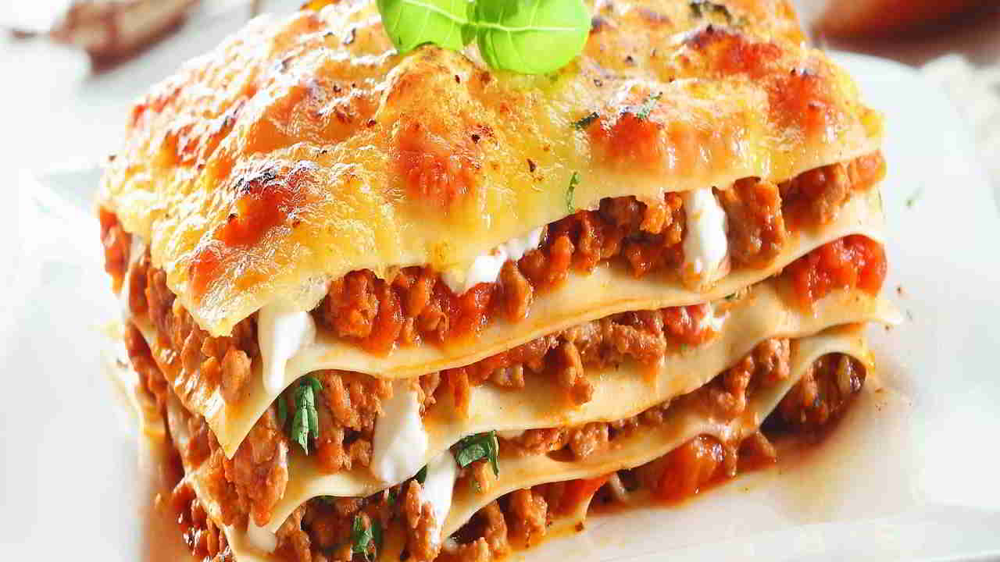

Faire durcir les oeufs pendant 5 à 10 minutes, les écaler et les couper en rondelles.
préchauffer votre four à 200°C (thermostat 6/7).
Faire cuire à sec la viande hachée dans un fait-tout,saler et poivrer.
Couper les boules de Mozarella en rondelles.
Dans un plats à lasagne,deposer un fond de sauce tomate puis une couche de plaque de lasagnes,une couche de viande hachée,quelques rondelles d'oeufs et de Mozarella et une couche de sauce tomate.réitérer l'opération et terminer par la mozarella.
Mettre au four durant une demi-heure, reduisez la température à 160°C